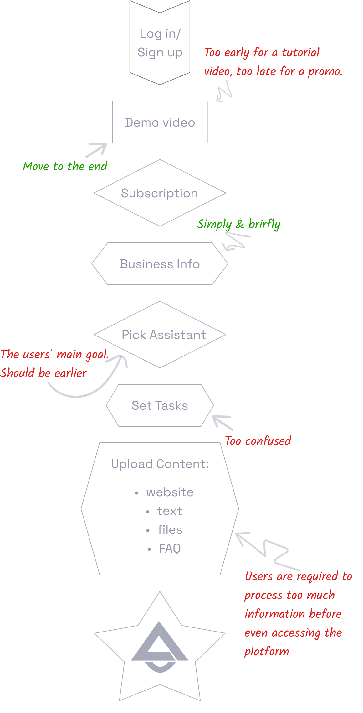
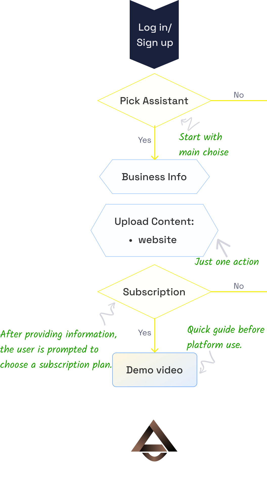
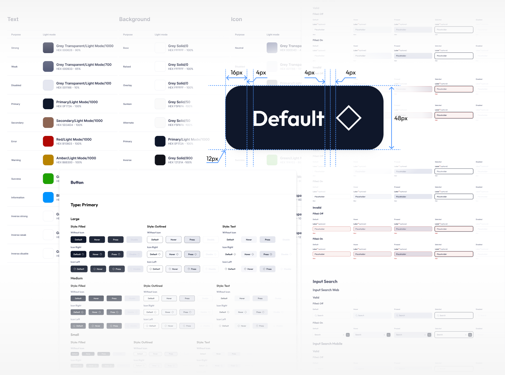

AI Assistant Platform · 2025 · SaaS Web App / Productivity Tools
Rebuilt the Lexicon Lab SaaS product from MVP into a coherent system.
Information architecture, a design system, and every core flow — starting with onboarding, the step that decided whether a new user ever reached the product, where time-to-first-working-assistant dropped from 15–20 minutes to 5–7.
Quick facts
- Role
- UX/UI designer
- Team
- 2 co-founders, frontend dev, full-stack dev
- Duration
- 6 months
- Engagement
- Contract, embedded
Context & Ownership
Lexicon Lab is a platform for building AI customer-support assistants, aimed at small-business owners with no technical background. I joined as the UX/UI designer on a team of 2 co-founders (technical lead and product-marketing/positioning lead), a frontend developer, and a full-stack developer. I worked under contract, embedded in the product team, for 6 months.
I started from a raw MVP: ran a UX/UI audit, built out the design system, defined the information architecture, and rebuilt every core flow in the product — adding new ones where they were missing, starting with onboarding as the user's first touchpoint. I documented everything in a complete Figma file, then validated decisions with real users and iterated. I owned UX decisions end-to-end — from the initial audit through implementation — checking technical feasibility with the frontend and full-stack developers as flows took shape.
Technical constraint: linking a created assistant to a specific channel required the user to enter an API key — that step couldn't be skipped. The challenge was making required steps as unobtrusive as possible.
The Problem
The product was built for small-business owners with no technical background, but the interface reflected an engineer's mental model of the system's architecture rather than the path its actual users needed to take. The sharpest consequence: roughly a third of users (30%) dropped off during onboarding, never reaching their first created assistant.
30%
dropped off during onboarding
“The onboarding feels way too long — I kept wondering if I was doing something wrong. There's no clear path, and I wasn't sure when I'd actually get to use the assistant.”
“The visuals don't feel friendly. I found myself stuck, re-reading the same instructions — nothing guided me naturally through the flow.”
Discovery
I ran a UX/UI audit, grounded in product analytics and the feedback the team had already been collecting from users. The audit surfaced a systemic problem: navigation lost users between sections, information had no clear hierarchy, and the assistant setup and testing flow gave no clear feedback on progress. Of these findings, onboarding carried the highest cost — it was where the largest share of users was lost — so it became the starting point for the whole redesign.
content overload
Evidence
30% → 15%
onboarding drop-off
Insight
“It asked me for everything at once — I didn’t know what was actually required and what I could skip for now.”
Decision
10 → 6
mandatory steps — non-essential fields deferred to in-context prompts later in the flow
-
Overwhelming onboarding
Users struggled to understand where to begin and what to do next.
“I kept clicking through screens hoping the actual product would show up — by the third one I was checking if I’d even signed up for the right thing.”
-
Minimal features, yet confusing
Poor navigation and layout made interaction harder despite a limited feature set.
“There isn’t that much to it, honestly, but I still had to guess where everything was.”
-
Unfriendly visuals
UI lacked consistency, space, and visual clarity.
“It felt more like a settings panel than something I was supposed to enjoy using.”
-
Low guidance for configuration/
testing Users didn't know how to set up or test assistants without external help.
“I finished setting it up but had no idea if it actually worked — I had to ask someone to double-check it for me.”
Process
I audited every core flow against one principle: one required path to the user's actual goal, with everything else deferred as optional support. I started with onboarding — the user's first touchpoint with the product, and the one most of what follows depends on — which is why the redesign began there: seven steps stood between sign-up and the product itself, with the user's actual goal only appearing at step five.
The same logic then carried across the rest of the flows: assistant management, channel connections, chats, and leads.
The decisions were mine — grounded in the audit and validated with real users. I kept the team informed wherever a change affected their work. After handoff, I checked the shipped product against the design and filed tickets for the developer to fix discrepancies.
onboarding


Solution
The solution was a rebuilt information architecture and deliberately redesigned flows. The IA is split into two layers: tools for working with the assistant (Playground, Data Cloud) separated from business tools (Chats, Leads, Integrations, Analytics) — matching the two distinct jobs a business owner has, instead of mixing them into one menu. Every flow follows the same principle: one required path to the goal, with secondary options revealed progressively.
Assistant tools
- Playground
- Data Cloud
Business tools
- Chats
- Leads
- Integrations
- Analytics
Account / utility
- Notifications
- Support
- Plan & credits
Design System
Every screen above draws from one design system I built and maintained throughout the project: consistent colour and opacity tokens, and a shared set of components reused across both the Assistant tools and Business tools sides of the product.
Colour and opacity tokens, button anatomy with spacing annotations, and the full state matrix for buttons and inputs — the same components reused across every screen.

Evolution
After v1 shipped, the product ran stably in production. Using the same design system and information architecture, I designed a second product — a white-label version for an English-language learning school — confirming the system scales beyond a single product. Both products launched, and that marked the end of the active development phase.
Impact
The product shipped, stayed in production, and was never reverted. The same design system and information architecture proved resilient enough to launch a second product — a white-label version for a different market — without a separate design cycle. The clearest, fully measured proof of the approach is onboarding: the share of users lost during it dropped by roughly half, the average time to create a first assistant fell sharply, and the number of mandatory steps came down.
30% → 15%
Onboarding drop-off
15–20 min → 5–7 min
time to first assistant
10 → 6
Mandatory steps
Same system, second product
the design system and IA carried over to a white-label product without a separate design cycle
Shipped and stayed
the redesigned flows went into production and were never rolled back
Reflection & What's next
The biggest lesson from this project was the value of staged alignment: checking every key flow step against business constraints and user feedback as it happened, rather than after a full mockup was handed off. That sharply shortened the revision cycle and kept the design within the team's technical limits from the start. Starting today, I'd add step-level onboarding analytics from day one — qualitative feedback pointed in the right direction, but per-step data would have made prioritizing what to simplify first far more precise.